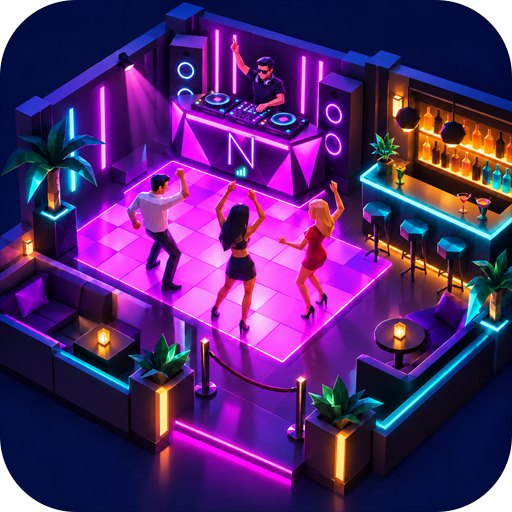
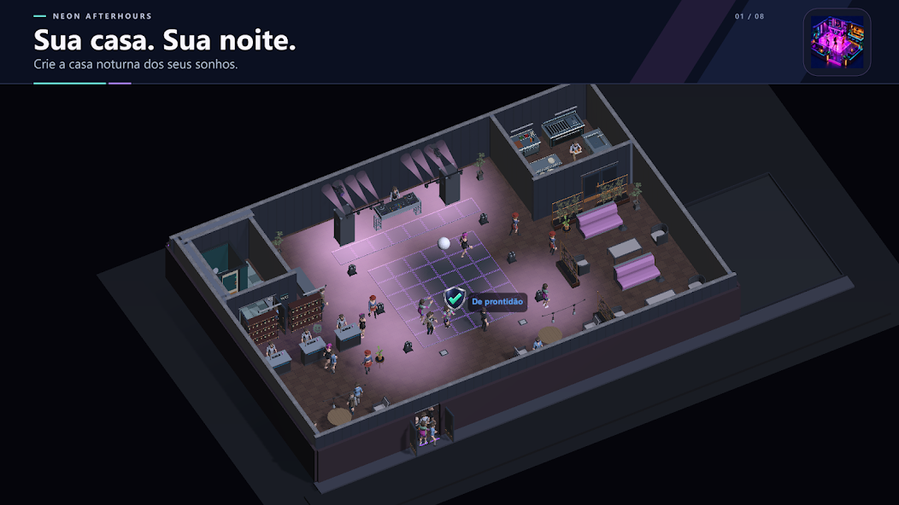
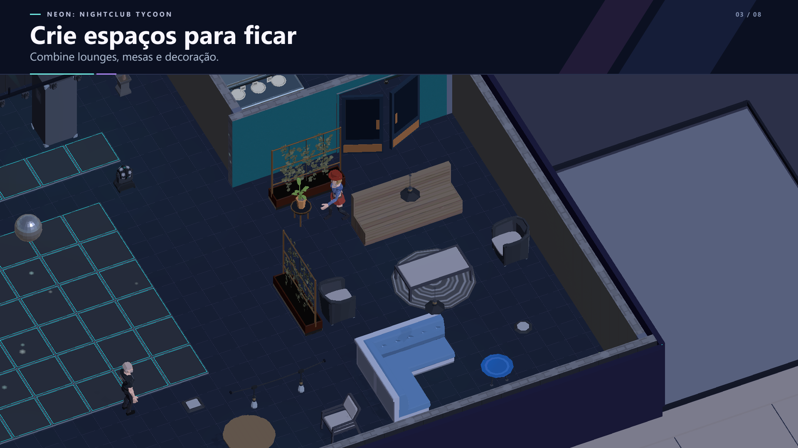
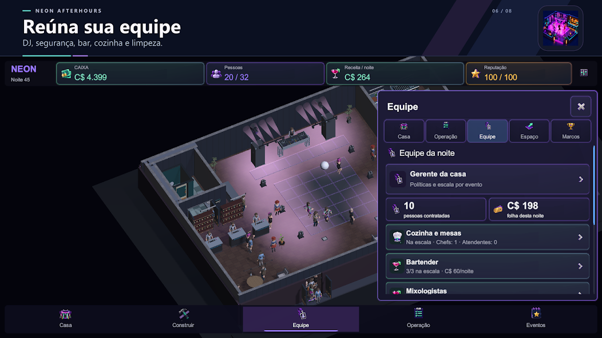
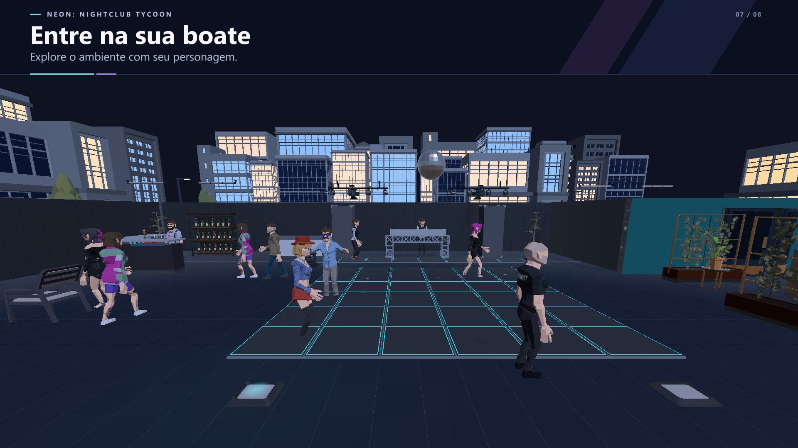
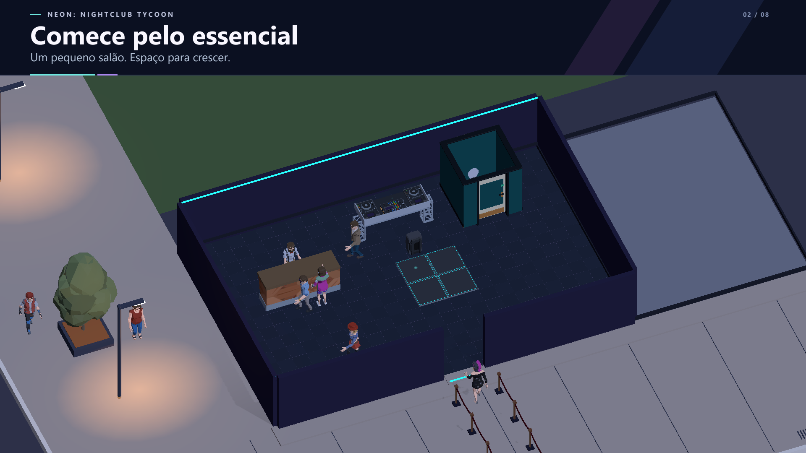
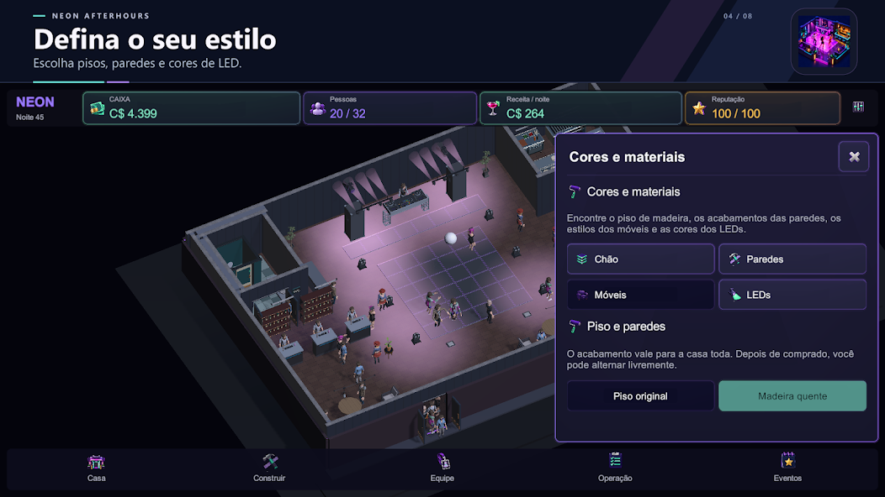
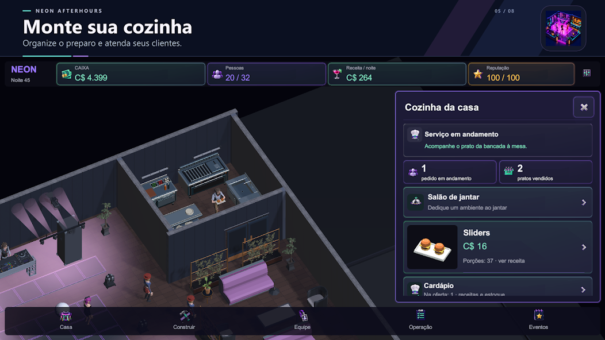
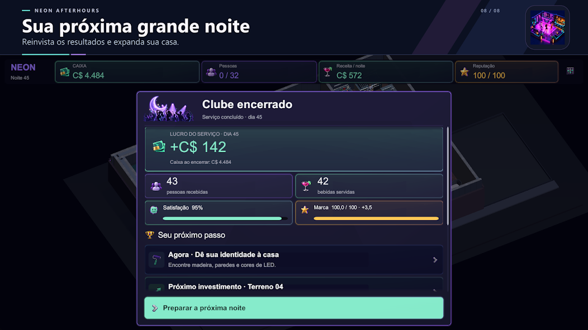

WolZ Games apresenta
NEON: NIGHTCLUB TYCOON
A NOITE
É SUA.
Construa, decore e gerencie sua própria casa noturna. Crie a atmosfera, cuide da equipe e viva a noite de perto.
Disponível no Google Play

01 / O jogo
DO SEU JEITO.
NO SEU RITMO.
Uma casa noturna começa com espaço para imaginar. O que ela vai se tornar depende das suas escolhas.



02 / Imagens do jogo
POR DENTRO
DA NOITE.
Da primeira ideia à pista cheia.
Veja Neon: Nightclub Tycoon de perto.


01 / EXPERIÊNCIAViva a sua própria noite 02 / ATMOSFERADê vida a cada ambiente


03 / CONSTRUÇÃOComece com uma ideia

04 / PERSONALIZAÇÃODefina o seu estilo

05 / OPERAÇÃOMonte sua cozinha 06 / EQUIPEReúna sua equipe


07 / GESTÃOSua próxima grande noite 08 / SUA CASASua casa. Sua noite.
03 / No seu ritmo
SUA CASA.
SUAS ESCOLHAS.
Uma boa noite começa sem complicação.
O que você precisa saber para jogar.
Posso jogar offline?
Sim. Neon: Nightclub Tycoon pode ser jogado offline, para você cuidar da sua casa noturna no seu ritmo.
Como funciona o salvamento?
O jogo oferece salvamento opcional com o Google Play Games.
O jogo tem anúncios?
Há anúncios premiados opcionais. Você escolhe quando assistir.
Onde posso jogar?
Neon: Nightclub Tycoon está disponível para Android no Google Play.
NEON: NIGHTCLUB TYCOON / ANDROID
ABRA AS PORTAS.
A NOITE TE ESPERA.
Seu próximo destino é a sua própria casa noturna.
Jogar no Android